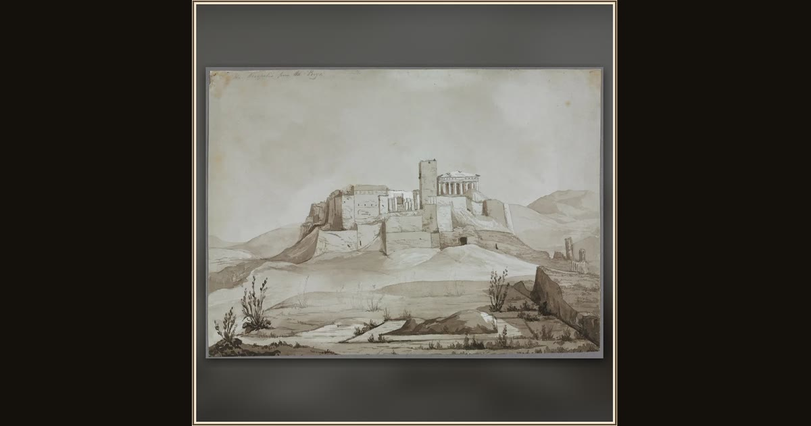

The Acropolis from the Pnyx, Athens, Greece
England, 19th century · 1844 · cma
A wash drawing of the Acropolis and its sheer walls. Herodotus tells how Persians climbed the unguarded steep face in front of the citadel, where no one thought a man could go up (8.53). Explore its place in Herodotus's Histories, Book VIII, chapter 106.